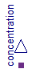
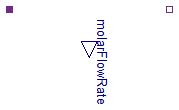
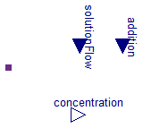

Physiolibrary.Chemical.Sensors.ConcentrationMeasure
Physiolibrary.Chemical.Sensors.ConcentrationMeasure
Physiolibrary.Chemical.Sensors.ConcentrationMeasure
Physiolibrary.Chemical.Sensors.ConcentrationMeasure
Measure of molar concentration

| Type | Name | Description |
|---|---|---|
| ChemicalPort_a | q_in | For measure only |
| output ConcentrationOutput | concentration | Concentration [mol/m3] |
2009-2010
Marek Matejak, Charles University, Prague, Czech Republic
 Physiolibrary.Chemical.Sensors.MolarFlowMeasure
Physiolibrary.Chemical.Sensors.MolarFlowMeasure
Measure of molar flow

Extends from Chemical.Interfaces.OnePort (Partial transfer of solute beween two ports without its accumulation), Icons.MolarFlowMeasure.
| Type | Name | Description |
|---|---|---|
| ChemicalPort_b | q_out | |
| ChemicalPort_a | q_in | |
| output MolarFlowRateOutput | molarFlowRate | [mol/s] |
2009-2010
Marek Matejak, Charles University, Prague, Czech Republic
Extends from Modelica.Icons.SensorsPackage (Icon for packages containing sensors).
| Name | Description |
|---|---|
| Measure of molar flow | |
| Measure of molar concentration | |
| Incremental flow concentration meassure in circulation after absorption/secretion source (i.e. portal vein concentration) |
 Physiolibrary.Chemical.Sensors.IncrementalFlowConcentrationMeasure
Physiolibrary.Chemical.Sensors.IncrementalFlowConcentrationMeasure
Incremental flow concentration meassure in circulation after absorption/secretion source (i.e. portal vein concentration)

Extends from Chemical.Interfaces.ConditionalSolutionFlow (Input of solution volumetric flow vs. parametric solution volumetric flow).
| Type | Name | Default | Description |
|---|---|---|---|
| VolumeFlowRate | SolutionFlow | 0 | Volumetric flow of solution if useSolutionFlowInput=false [m3/s] |
| External inputs/outputs | |||
| Boolean | useSolutionFlowInput | false | =true, if solution flow input is used instead of parameter SolutionFlow |
| Type | Name | Description |
|---|---|---|
| input VolumeFlowRateInput | solutionFlow | [m3/s] |
| output ConcentrationOutput | concentration | Concentration after absorption source [mol/m3] |
| input MolarFlowRateInput | addition | [mol/s] |
| ChemicalPort_a | q_in |
2009-2010
Marek Matejak, Charles University, Prague, Czech Republic